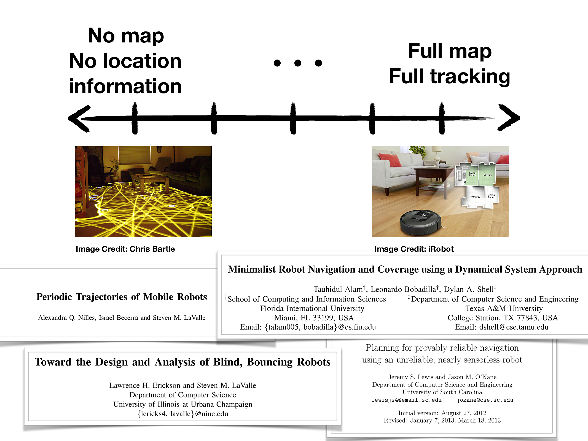
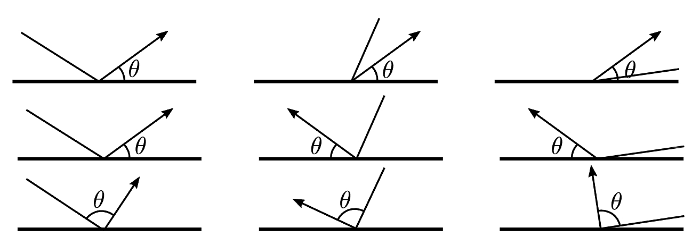
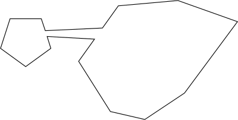
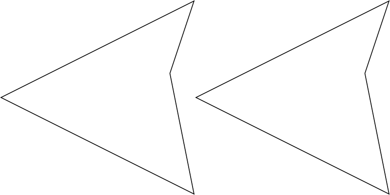
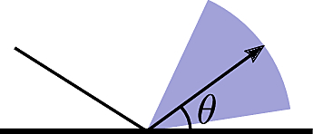
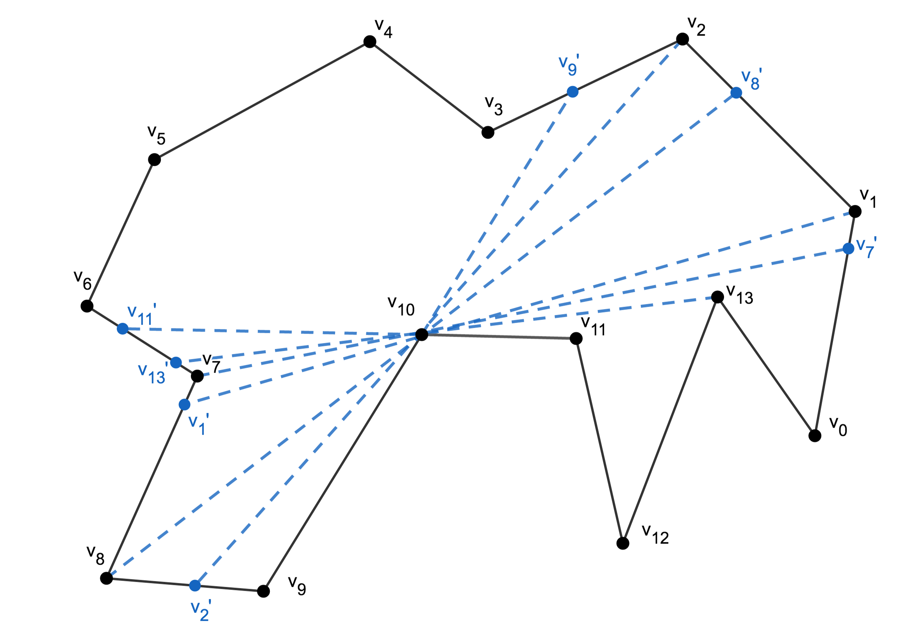
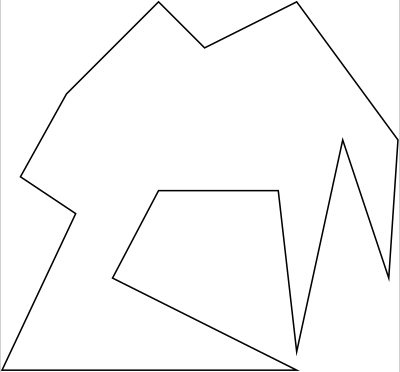
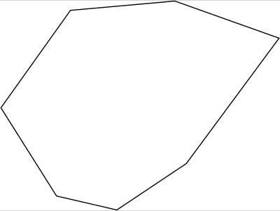
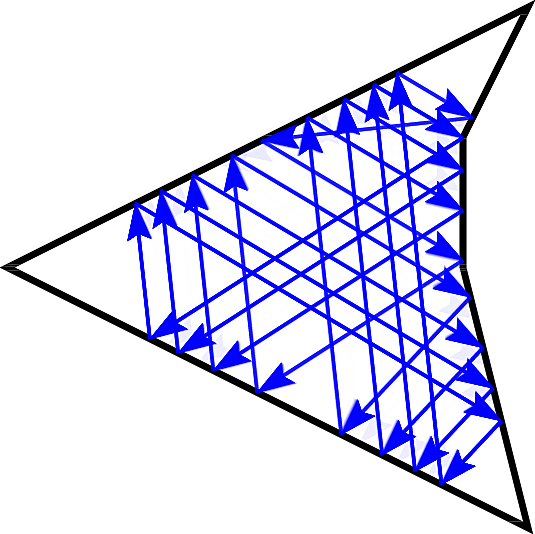

A Visibility-Based Approach to Computing Nondeterministic Bouncing Strategies
Alli Nilles, Samara Ren, Israel Becerra, Steven M. LaValle
December 9, 2018
Minimalist Mobile Robots

A Different Motion Model
Consider a point robot moving in a polygonal environment.
Tell the robot, “go forward until you can’t any more!”
Compliance can reduce sensing and estimation requirements!

Bounce rule: determines action \(u \in (0, \pi)\) at boundary.
Goal: Plan over strategies of sequential bounce rules.
Interesting Baseline Behaviors
Iterating the same rule can cause cycles and trapping regions:

Combinatorial changes from small perturbations:

First example inspired by Spagnolie, S. E., Wahl, C., Lukasik, J., & Thiffeault, J. L. (2017). Microorganism billiards. Physica D: Nonlinear Phenomena, 341, 33-44.
What About Uncertainty?

Uncertainty is unavoidable… Plan over nondeterministic bounce rules!
Actions are convex open sets \(\tilde{\theta} \subseteq (0,\pi)\)
Safe actions: Any action in \(\tilde{\theta}\) from anywhere on edge \(e_i\) will get you to somewhere on edge \(e_j\).
Goal: along with plan, output a characterization of how much uncertainty the plan can tolerate (design constraints!)
Geometry Influences Dynamics
Given geometry, we can explicitly analyze state transitions between intervals on the boundary \(\partial P\) under nondeterministic actions \(\tilde{\theta}\):
\(f: \partial P \times U \to \partial P\)
Observation: \(f\) is easier to analyze when looking at pairs of mutually visible edges.
Observation: in a single action, the robot can only transition to visible segments of the boundary.
Use geometric structure to discretize space of possible trajectories!
Our Approach
- Partition boundary using “visibility events”
- Create safe edge-to-edge transition graph
- Search for paths and cycles (depending on specification)
- Translate paths to strategies
Visibility Decomposition

Static obstacles are ok too - same partitioning operation!
Safe Bounce Visibility Graph

Algorithm 1 of paper: polygon with \(n\) vertices will produce bounce visibility graph with \(O(n^2)\) nodes and \(O(n^4)\) edges.
Properties of Safe Bounce Visibility Graph
- Some segments are unreachable under safe actions
- Proposition: For every polygon \(P\) and the resulting partitioned polygon \(P'\) under Algorithm 1, each edge \(e \in P'\) has at least two safe actions which allow transitions away from \(e\).
Example Path Queries
Of all paths from A to B (up to bounded length), which allows the most unreliable robot?
From a given start set, what parts of the polygon boundary are reachable under uncertainty? How much uncertainty?
What parts of polygon are reachable under a given set of actions?
What parts of the polygon are reachable with a constant controller?
Safe Stable Cycles
A cycle is stable when the composition of transition functions is a contraction mapping: two points under the mapping become closer together.
Theorem: For all convex polygons with \(n\) edges, there exist constant fixed-angle bouncing strategies which result in a period \(n\) limit cycle regardless of the robot’s start position.
Proposition: For all points \(s\) on the boundary of all polygons, a constant fixed-angle controller exists which will cause the robot’s trajectory to enter a stable limit cycle.
 
Example Cycle Queries
- Is there a safe cycle which visits edge set \(E\) (in a particular order, or not)?
- Note that safe cycles are “stable,” even if they do not have the contraction property for all \(s, \theta\).
- For actions with uncertainty \(\pm \epsilon\), is there a reachable cycle which will shrink the size of the robot’s state estimate below \(\delta\)?
Dirty Laundry
- Not complete: given a small start set, safe paths exist that we cannot find
- We can’t actually ignore corners always
- Needs experimental validation!
Future Work
- How to plan over limit cycles? There are exponentially many, but only some are “good” (admit relatively large error cones, chain together easily with other limit cycles, etc)
- Code refactor, leading to design of high-level specification language
- LTL-ish (eventually reach region A… stay in region B until…)
- Multirobot context: guarantees on robot presence and density
- More concrete applications
- Mobile robot monitoring conditions in warehouse, greenhouse, office
- Forest fire detecting drones, and other conservation applications
Thank you! Questions?

Presentation Template from https://github.com/PeterMosmans/presentation-template